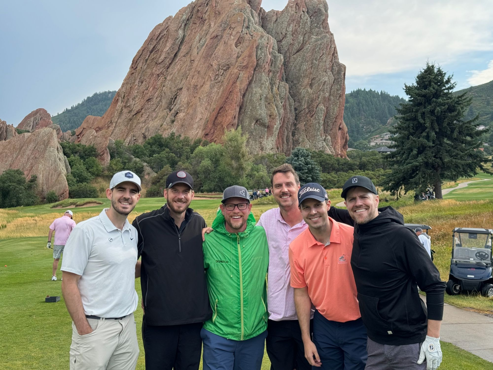
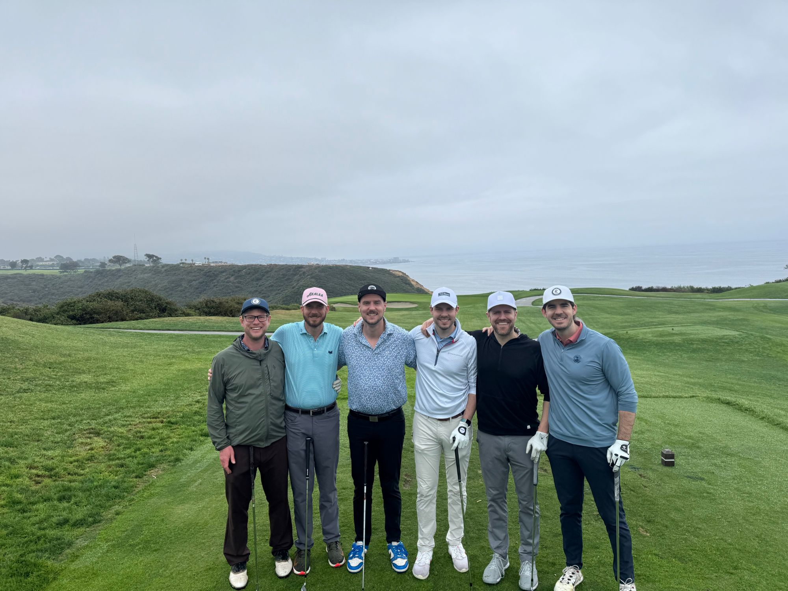

Kenly Golf Club isn't a club. There's no clubhouse, no dues, no waiting list — just brothers and cousins, a different course every year, and a group text that starts getting loud around February. Somebody picks a destination, everyone finds flights, and for four days it's the only club any of us needs. This year it's Pinehurst, October 1–4, 2026.
The name, though, isn't made up. It borrows from somewhere real.
Where "Kenly" and the crest come from
My great-great-grandfather was Granger Farwell, of Lake Forest, Illinois. He ran a dairy farm called Knollwood. In 1924, a golf club went up nearby and took the farm's name — Knollwood Club — and its first clubhouse was built by combining Granger's old farmhouse with the McCord house next door.
That's it, that's the whole connection: a dairy farm lent its name to a golf club a hundred-plus years ago. We're not members, we don't run it, and we're not pretending otherwise — see below.
How we got from there to here
Granger Farwell had a daughter, Ruth Goodrich Farwell, who married Franklin Corning Kenly Sr. Their son was Granger Farwell Kenly Sr. (1919–2004) — my grandfather, and the reason there's a "Kenly" in Kenly Golf Club at all. From him it passed down to our fathers, and now to us: a name that skipped a few generations of golf and landed on a group chat that argues about tee times.
About the logo
Our crest is a nod to Knollwood's original 1924 club crest — same idea of a shield, crossed clubs, and a ball resting on top. For 2026, we redrew it as our own: our initial, our lines, our green. A small tip of the cap to where the name started, not a copy of it.

The Kenly Golf Club crest, redrawn for this trip.
The last two trips


Different course, different coastline, same cast of characters. Pinehurst is next.